Zambia
Notes:
- 1 Int’l $ = 5.59 ZMW (Kwacha) using 2020 World Bank PPP conversion rates (1 Int’l $ = 1 USD)
- Focus crops = soybean, maize, cowpea, bean
- All costs are reported per hectare. Inspection, certification and other marketing costs are assumed for the entire farm. Labeling and packaging are per kg.
- Some farmers grow multiple crops
Survey Recodes
xrate <- 5.59
# Load respondent data
hh <- fread("../data/zmb/hh.csv")
group <- fread("../data/zmb/group.csv")There are 23 variables and 76 observations in this set. A summary is shown below.
print(dfSummary(hh),
max.tbl.height=500, table.classes="table-condensed", method="render")Error : thematic doesn’t (yet) support the ‘PNG’ graphics device. Please report this error to https://github.com/rstudio/thematic/issues/new Error : thematic doesn’t (yet) support the ‘PNG’ graphics device. Please report this error to https://github.com/rstudio/thematic/issues/new Error : thematic doesn’t (yet) support the ‘PNG’ graphics device. Please report this error to https://github.com/rstudio/thematic/issues/new Error : thematic doesn’t (yet) support the ‘PNG’ graphics device. Please report this error to https://github.com/rstudio/thematic/issues/new Error : thematic doesn’t (yet) support the ‘PNG’ graphics device. Please report this error to https://github.com/rstudio/thematic/issues/new Error : thematic doesn’t (yet) support the ‘PNG’ graphics device. Please report this error to https://github.com/rstudio/thematic/issues/new Error : thematic doesn’t (yet) support the ‘PNG’ graphics device. Please report this error to https://github.com/rstudio/thematic/issues/new Error : thematic doesn’t (yet) support the ‘PNG’ graphics device. Please report this error to https://github.com/rstudio/thematic/issues/new Error : thematic doesn’t (yet) support the ‘PNG’ graphics device. Please report this error to https://github.com/rstudio/thematic/issues/new Error : thematic doesn’t (yet) support the ‘PNG’ graphics device. Please report this error to https://github.com/rstudio/thematic/issues/new Error : thematic doesn’t (yet) support the ‘PNG’ graphics device. Please report this error to https://github.com/rstudio/thematic/issues/new Error : thematic doesn’t (yet) support the ‘PNG’ graphics device. Please report this error to https://github.com/rstudio/thematic/issues/new Error : thematic doesn’t (yet) support the ‘PNG’ graphics device. Please report this error to https://github.com/rstudio/thematic/issues/new Error : thematic doesn’t (yet) support the ‘PNG’ graphics device. Please report this error to https://github.com/rstudio/thematic/issues/new Error : thematic doesn’t (yet) support the ‘PNG’ graphics device. Please report this error to https://github.com/rstudio/thematic/issues/new Error : thematic doesn’t (yet) support the ‘PNG’ graphics device. Please report this error to https://github.com/rstudio/thematic/issues/new Error : thematic doesn’t (yet) support the ‘PNG’ graphics device. Please report this error to https://github.com/rstudio/thematic/issues/new Error : thematic doesn’t (yet) support the ‘PNG’ graphics device. Please report this error to https://github.com/rstudio/thematic/issues/new Error : thematic doesn’t (yet) support the ‘PNG’ graphics device. Please report this error to https://github.com/rstudio/thematic/issues/new Error : thematic doesn’t (yet) support the ‘PNG’ graphics device. Please report this error to https://github.com/rstudio/thematic/issues/new Error : thematic doesn’t (yet) support the ‘PNG’ graphics device. Please report this error to https://github.com/rstudio/thematic/issues/new Error : thematic doesn’t (yet) support the ‘PNG’ graphics device. Please report this error to https://github.com/rstudio/thematic/issues/new Error : thematic doesn’t (yet) support the ‘PNG’ graphics device. Please report this error to https://github.com/rstudio/thematic/issues/new
| Variable | Stats / Values | Freqs (% of Valid) | Graph | Valid | Missing | |||||||||||||||||||||||||||||||||||||||||||||||||||||||
|---|---|---|---|---|---|---|---|---|---|---|---|---|---|---|---|---|---|---|---|---|---|---|---|---|---|---|---|---|---|---|---|---|---|---|---|---|---|---|---|---|---|---|---|---|---|---|---|---|---|---|---|---|---|---|---|---|---|---|---|---|
| Code [character] |
|
|
 |
76 (100.0%) | 0 (0.0%) | |||||||||||||||||||||||||||||||||||||||||||||||||||||||
| Province [character] |
|
|
 |
76 (100.0%) | 0 (0.0%) | |||||||||||||||||||||||||||||||||||||||||||||||||||||||
| Group [character] |
|
|
 |
76 (100.0%) | 0 (0.0%) | |||||||||||||||||||||||||||||||||||||||||||||||||||||||
| Age [character] |
|
|
 |
76 (100.0%) | 0 (0.0%) | |||||||||||||||||||||||||||||||||||||||||||||||||||||||
| Sex [character] |
|
|
 |
76 (100.0%) | 0 (0.0%) | |||||||||||||||||||||||||||||||||||||||||||||||||||||||
| Crop [character] |
|
|
 |
76 (100.0%) | 0 (0.0%) | |||||||||||||||||||||||||||||||||||||||||||||||||||||||
| Cost seed per ha (LCU) [integer] |
|
32 distinct values |  |
76 (100.0%) | 0 (0.0%) | |||||||||||||||||||||||||||||||||||||||||||||||||||||||
| Cost of fertilizer per ha (LCU) [integer] |
|
31 distinct values |  |
76 (100.0%) | 0 (0.0%) | |||||||||||||||||||||||||||||||||||||||||||||||||||||||
| Cost of pesticide per ha (LCU) [integer] |
|
31 distinct values |  |
76 (100.0%) | 0 (0.0%) | |||||||||||||||||||||||||||||||||||||||||||||||||||||||
| Cost of transport per ha (LCU) [integer] |
|
23 distinct values |  |
76 (100.0%) | 0 (0.0%) | |||||||||||||||||||||||||||||||||||||||||||||||||||||||
| Labor cost (LCU) [integer] |
|
24 distinct values |  |
76 (100.0%) | 0 (0.0%) | |||||||||||||||||||||||||||||||||||||||||||||||||||||||
| Inspection / certification Fees (LCU) [integer] |
|
|
 |
76 (100.0%) | 0 (0.0%) | |||||||||||||||||||||||||||||||||||||||||||||||||||||||
| Labelling costs per kg (LCU) [numeric] |
|
|
 |
76 (100.0%) | 0 (0.0%) | |||||||||||||||||||||||||||||||||||||||||||||||||||||||
| Packaging costs per kg (LCU) [numeric] |
|
11 distinct values |  |
76 (100.0%) | 0 (0.0%) | |||||||||||||||||||||||||||||||||||||||||||||||||||||||
| Other marketing costs? (LCU) [integer] |
|
|
 |
76 (100.0%) | 0 (0.0%) | |||||||||||||||||||||||||||||||||||||||||||||||||||||||
| Estimated Yield (kg/ha) [integer] |
|
43 distinct values |  |
76 (100.0%) | 0 (0.0%) | |||||||||||||||||||||||||||||||||||||||||||||||||||||||
| Selling price of seed per kg (LCU) [numeric] |
|
22 distinct values |  |
75 (98.7%) | 1 (1.3%) | |||||||||||||||||||||||||||||||||||||||||||||||||||||||
| Selling price of grain per kg (LCU) at sowing [numeric] |
|
21 distinct values |  |
75 (98.7%) | 1 (1.3%) | |||||||||||||||||||||||||||||||||||||||||||||||||||||||
| Selling price of grain per kg (LCU) at harvest [numeric] |
|
20 distinct values |  |
74 (97.4%) | 2 (2.6%) | |||||||||||||||||||||||||||||||||||||||||||||||||||||||
| How many kg were sold in the season? [integer] |
|
29 distinct values |  |
76 (100.0%) | 0 (0.0%) | |||||||||||||||||||||||||||||||||||||||||||||||||||||||
| What was your expected gross margin? [integer] |
|
52 distinct values |  |
76 (100.0%) | 0 (0.0%) | |||||||||||||||||||||||||||||||||||||||||||||||||||||||
| Gross Revenue [integer] |
|
52 distinct values | |
76 (100.0%) | 0 (0.0%) | |||||||||||||||||||||||||||||||||||||||||||||||||||||||
| How long have you been a member of this group? [integer] |
|
15 distinct values |  |
76 (100.0%) | 0 (0.0%) |
Generated by summarytools 1.0.0 (R version 3.6.3)
2021-08-05
Recode variable names (see codebook).
setnames(hh, lbl$label, lbl$code, skip_absent=T)Additional recodes for categorical variables.
setorder(hh, adm1_nm, group, gender, crop)
hh[, `:=`(
hhid = paste("ZMB", gsub(" ", "0", format(1:.N, width=3)), sep=""),
iso3 = "ZMB",
crop = factor(crop),
adm1_nm = factor(adm1_nm),
# Abbreviate seed club names
group = factor(group, levels=c(
"Mweete Seed Growers Association",
"Tiwine Womens Seed growers Cooperative",
"Mumbwa Seed Growers Association",
"Chiyota Seed Growers Association"
), labels=c(
"Mweete",
"Tiwine",
"Mumbwa",
"Chiyota"
)),
gender = factor(gender, levels=c("male", "female"), labels=c("Male", "Female")),
age = factor(age, levels=c("25", "15-29", "30+"), labels=c("< 30", "< 30", "≥ 30")),
years = factor(member_years >= 5, levels=c(F, T), labels=c("< 5", "≥ 5"))
)]Constructed Variables
Farmers report both expected yields yield_ha_kg and sales in the last season sales_ha_kg, so we can construct both expected and realized costs in monetary terms costs_exp_ha_lcu and costs_real_ha_lcu. We use realized yields to calculate profitability metrics.
Note that 1 farmer did not report a sales price, so we use the reported median.
kbl(caption="Missing sales entry",
hh[is.na(sales_kg_lcu),
.(hhid, code, group, crop, yield_ha_kg, sales_ha_kg, sales_kg_lcu)])| hhid | code | group | crop | yield_ha_kg | sales_ha_kg | sales_kg_lcu |
|---|---|---|---|---|---|---|
| ZMB023 | FARMER27 | Tiwine | maize | 2500 | 0 | – |
hh[,
tran_ha_lcu := as.numeric(tran_ha_lcu)
][, `:=`(
tran_ha_lcu = fifelse(is.na(tran_ha_lcu), 0, tran_ha_lcu),
sales_kg_lcu = fifelse(is.na(sales_kg_lcu), median(sales_kg_lcu, na.rm=T), sales_kg_lcu)
), by=.(group, crop)][, `:=`(
# Expected costs
costs_exp_ha_lcu =
# Per ha costs
seed_ha_lcu + fert_ha_lcu + pest_ha_lcu + tran_ha_lcu + labor_ha_lcu +
cert_lcu + mark_kg_lcu +
# Per kg costs
yield_ha_kg * (labl_kg_lcu + pckg_kg_lcu),
# Realized costs
costs_real_ha_lcu =
# Per ha costs
seed_ha_lcu + fert_ha_lcu + pest_ha_lcu + tran_ha_lcu + labor_ha_lcu +
cert_lcu + mark_kg_lcu +
# Per kg costs
sales_ha_kg * (labl_kg_lcu + pckg_kg_lcu)
)]
hh[, summary(costs_exp_ha_lcu)]## Min. 1st Qu. Median Mean 3rd Qu. Max.
## 20.0 498.1 993.2 1524.9 1861.2 10240.0hh[, summary(costs_real_ha_lcu)]## Min. 1st Qu. Median Mean 3rd Qu. Max.
## 10.0 497.5 973.2 1505.8 1853.8 9760.0Using realized costs and sales, we construct gross margin per ha margin_ha_lcu, total sales sales_ha_sh and profit margin margin_ha_sh per unit of (variable) input costs, and costs_ha_ppp, sales_ha_ppp and margin_ha_ppp in PPP terms to allow for comparisons across groups and countries.
We also construct a measure of total factor productivity tfp as expected output per unit of (expected) input costs. Strictly speaking it is only “partial factor productivity” here because we don’t include the rental cost of land, land preparation costs, irrigation costs, and the costs of animal and mechanical implements.
hh[, `:=`(
sales_exp_ha_lcu = yield_ha_kg * sales_kg_lcu,
sales_real_ha_lcu = sales_ha_kg * sales_kg_lcu
)][, `:=`(
margin_ha_lcu = sales_real_ha_lcu - costs_real_ha_lcu
)][, `:=`(
sales_ha_sh = sales_real_ha_lcu / costs_real_ha_lcu,
margin_ha_sh = margin_ha_lcu / costs_real_ha_lcu,
costs_ha_ppp = costs_real_ha_lcu / xrate,
sales_ha_ppp = sales_real_ha_lcu / xrate,
margin_ha_ppp = margin_ha_lcu / xrate
)][, `:=`(
tfp = yield_ha_kg / (costs_exp_ha_lcu / xrate)
)]Below we append some of the information that was recorded at the group level.
kbl(group, align="llc")| Group | Market access | Soil | Irrigation | Seasons | Transboundary trade | Members | Established |
|---|---|---|---|---|---|---|---|
| Tiwine Womens Seed growers Cooperative | Close to market with good road network | good | No | 1 | No | 50 | 2014 |
| Chiyota Seed Growers Association | Road is very bad. Far from markets as they take the produce to Lusaka | good | No | 1 | Yes | 25 | 2013 |
| Mumbwa Seed Growers Association | The purchasing seed companies (Afriseed and Kamano seed company) collect on site | loamy | No | 1 | No | 31 | 2001 |
| Mweete Seed Growers Association | They only sale to the seed company that supports them | sandy | No | 1 | No | 21 | 2019 |
| Kamimpampa Cooperative | Good road network and supplies Afriseed company | sandy | No | 1 | No | 70 | 2016 |
# Same recodes in the group-level dataset
group[, Group := factor(Group, levels=c(
"Mweete Seed Growers Association",
"Tiwine Womens Seed growers Cooperative",
"Mumbwa Seed Growers Association",
"Chiyota Seed Growers Association",
"Kamimpampa Cooperative"
), labels=c(
"Mweete",
"Tiwine",
"Mumbwa",
"Chiyota",
"Kamimpampa"
))]
# Merge
hh[group, on=.(group=Group), `:=`(
group_year = `Established`,
group_size = `Members`,
seasons = `Seasons`,
irrigated = `Irrigation`,
market_access = `Market access`,
ttrade = `Transboundary trade`
)]Finally we normalize all farmer cost line items into a “long” table hh_prod_cost for charting.
# Normalize production cost table per ha
hh_prod_cost <- hh[, .(hhid,
Seeds = seed_ha_lcu,
Fertilizer = fert_ha_lcu,
Pesticides = pest_ha_lcu,
Labor = labor_ha_lcu,
Transport = tran_ha_lcu,
Certification = cert_lcu,
Labeling = sales_ha_kg * labl_kg_lcu,
Packaging = sales_ha_kg * pckg_kg_lcu,
Marketing = mark_kg_lcu
)]
hh_prod_cost <- melt(hh_prod_cost, id.vars=1, value.name="lcu", variable.name="type")And we lump all marketing costs into a single category.
levels(hh_prod_cost$type) <- levels(hh_prod_cost$type)[c(1,2,3,4,9,9,9,9,9)]
hh_prod_cost <- hh_prod_cost[, .(
lcu = sum(lcu, na.rm=T)
), by=.(hhid, type)
][, `:=`(
# Add cost shares and PPP terms
share = lcu/sum(lcu, na.rm=T),
ppp = lcu/xrate
), by=.(hhid)
][hh, on=.(hhid), `:=`(
# Add classes
group = group,
gender = gender,
age = age,
years = years,
crop = crop
)]Descriptive Statistics
Respondent Characteristics
Breakdown by categorical variables. Note that farmers in HIMMA grow both crops.
ggplot(
hh[, .N, by=.(group, age, gender, crop, years)],
aes(axis1=crop, axis2=gender, axis3=age, axis4=years, y=N)) +
geom_alluvium(aes(fill=group), width=1/4, alpha=.7, color="white") +
geom_stratum(width=1/4) +
geom_text(stat="stratum", aes(label=after_stat(stratum)), angle=90, size=2.2) +
scale_x_discrete(limits=c("Crop", "Gender", "Age", "Years in Seed Club")) +
labs(y=NULL, fill="Seed Club",
title = "Categories of Survey Respondents - Zambia",
subtitle = "Stratified by seed club") +
theme_def(axis.text=element_text(face="bold"))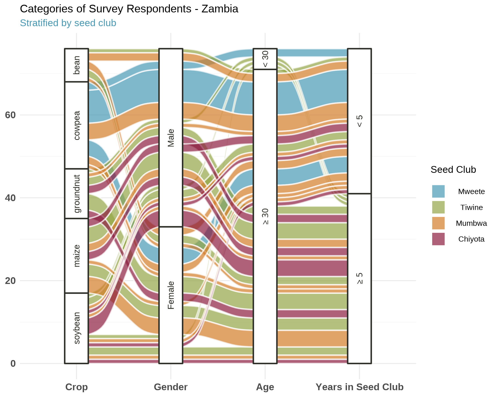
Showing contingency table between each pair of categorical variables (seed club group, gender, age age, and years in seed club years).
print(ctable(hh$group, hh$gender, chisq=T, round.digits=0,
dnn=c("Group", "Gender")),
table.classes="table-condensed", method="render")| Gender | |||||||||||||||||||||||||||||||||||||||||||||||||||||||||||||||||||||||||||||||||||||||||||||||||||
|---|---|---|---|---|---|---|---|---|---|---|---|---|---|---|---|---|---|---|---|---|---|---|---|---|---|---|---|---|---|---|---|---|---|---|---|---|---|---|---|---|---|---|---|---|---|---|---|---|---|---|---|---|---|---|---|---|---|---|---|---|---|---|---|---|---|---|---|---|---|---|---|---|---|---|---|---|---|---|---|---|---|---|---|---|---|---|---|---|---|---|---|---|---|---|---|---|---|---|---|
| Group | Male | Female | Total | ||||||||||||||||||||||||||||||||||||||||||||||||||||||||||||||||||||||||||||||||||||||||||||||||
| Mweete | 10 | ( | 71% | ) | 4 | ( | 29% | ) | 14 | ( | 100% | ) | |||||||||||||||||||||||||||||||||||||||||||||||||||||||||||||||||||||||||||||||||||||||
| Tiwine | 11 | ( | 48% | ) | 12 | ( | 52% | ) | 23 | ( | 100% | ) | |||||||||||||||||||||||||||||||||||||||||||||||||||||||||||||||||||||||||||||||||||||||
| Mumbwa | 11 | ( | 46% | ) | 13 | ( | 54% | ) | 24 | ( | 100% | ) | |||||||||||||||||||||||||||||||||||||||||||||||||||||||||||||||||||||||||||||||||||||||
| Chiyota | 11 | ( | 73% | ) | 4 | ( | 27% | ) | 15 | ( | 100% | ) | |||||||||||||||||||||||||||||||||||||||||||||||||||||||||||||||||||||||||||||||||||||||
| Total | 43 | ( | 57% | ) | 33 | ( | 43% | ) | 76 | ( | 100% | ) | |||||||||||||||||||||||||||||||||||||||||||||||||||||||||||||||||||||||||||||||||||||||
| Χ2 = 4.8158 df = 3 p = .1858 |
|||||||||||||||||||||||||||||||||||||||||||||||||||||||||||||||||||||||||||||||||||||||||||||||||||
Generated by summarytools 1.0.0 (R version 3.6.3)
2021-08-05
print(ctable(hh$group, hh$age, chisq=T, round.digits=0,
dnn=c("Group", "Age")),
table.classes="table-condensed", method="render")| Age | |||||||||||||||||||||||||||||||||||||||||||||||||||||||||||||||||||||||||||||||||||||||||||||||||||
|---|---|---|---|---|---|---|---|---|---|---|---|---|---|---|---|---|---|---|---|---|---|---|---|---|---|---|---|---|---|---|---|---|---|---|---|---|---|---|---|---|---|---|---|---|---|---|---|---|---|---|---|---|---|---|---|---|---|---|---|---|---|---|---|---|---|---|---|---|---|---|---|---|---|---|---|---|---|---|---|---|---|---|---|---|---|---|---|---|---|---|---|---|---|---|---|---|---|---|---|
| Group | < 30 | ≥ 30 | Total | ||||||||||||||||||||||||||||||||||||||||||||||||||||||||||||||||||||||||||||||||||||||||||||||||
| Mweete | 2 | ( | 14% | ) | 12 | ( | 86% | ) | 14 | ( | 100% | ) | |||||||||||||||||||||||||||||||||||||||||||||||||||||||||||||||||||||||||||||||||||||||
| Tiwine | 3 | ( | 13% | ) | 20 | ( | 87% | ) | 23 | ( | 100% | ) | |||||||||||||||||||||||||||||||||||||||||||||||||||||||||||||||||||||||||||||||||||||||
| Mumbwa | 0 | ( | 0% | ) | 24 | ( | 100% | ) | 24 | ( | 100% | ) | |||||||||||||||||||||||||||||||||||||||||||||||||||||||||||||||||||||||||||||||||||||||
| Chiyota | 0 | ( | 0% | ) | 15 | ( | 100% | ) | 15 | ( | 100% | ) | |||||||||||||||||||||||||||||||||||||||||||||||||||||||||||||||||||||||||||||||||||||||
| Total | 5 | ( | 7% | ) | 71 | ( | 93% | ) | 76 | ( | 100% | ) | |||||||||||||||||||||||||||||||||||||||||||||||||||||||||||||||||||||||||||||||||||||||
| Χ2 = 5.6633 df = 3 p = .1292 |
|||||||||||||||||||||||||||||||||||||||||||||||||||||||||||||||||||||||||||||||||||||||||||||||||||
Generated by summarytools 1.0.0 (R version 3.6.3)
2021-08-05
print(ctable(hh$group, hh$years, chisq=T, round.digits=0,
dnn=c("Group", "Years in Seed Club")),
table.classes="table-condensed", method="render")| Years in Seed Club | |||||||||||||||||||||||||||||||||||||||||||||||||||||||||||||||||||||||||||||||||||||||||||||||||||
|---|---|---|---|---|---|---|---|---|---|---|---|---|---|---|---|---|---|---|---|---|---|---|---|---|---|---|---|---|---|---|---|---|---|---|---|---|---|---|---|---|---|---|---|---|---|---|---|---|---|---|---|---|---|---|---|---|---|---|---|---|---|---|---|---|---|---|---|---|---|---|---|---|---|---|---|---|---|---|---|---|---|---|---|---|---|---|---|---|---|---|---|---|---|---|---|---|---|---|---|
| Group | < 5 | ≥ 5 | Total | ||||||||||||||||||||||||||||||||||||||||||||||||||||||||||||||||||||||||||||||||||||||||||||||||
| Mweete | 14 | ( | 100% | ) | 0 | ( | 0% | ) | 14 | ( | 100% | ) | |||||||||||||||||||||||||||||||||||||||||||||||||||||||||||||||||||||||||||||||||||||||
| Tiwine | 3 | ( | 13% | ) | 20 | ( | 87% | ) | 23 | ( | 100% | ) | |||||||||||||||||||||||||||||||||||||||||||||||||||||||||||||||||||||||||||||||||||||||
| Mumbwa | 14 | ( | 58% | ) | 10 | ( | 42% | ) | 24 | ( | 100% | ) | |||||||||||||||||||||||||||||||||||||||||||||||||||||||||||||||||||||||||||||||||||||||
| Chiyota | 4 | ( | 27% | ) | 11 | ( | 73% | ) | 15 | ( | 100% | ) | |||||||||||||||||||||||||||||||||||||||||||||||||||||||||||||||||||||||||||||||||||||||
| Total | 35 | ( | 46% | ) | 41 | ( | 54% | ) | 76 | ( | 100% | ) | |||||||||||||||||||||||||||||||||||||||||||||||||||||||||||||||||||||||||||||||||||||||
| Χ2 = 30.2132 df = 3 p = .0000 |
|||||||||||||||||||||||||||||||||||||||||||||||||||||||||||||||||||||||||||||||||||||||||||||||||||
Generated by summarytools 1.0.0 (R version 3.6.3)
2021-08-05
Seed Production Costs
General breakdown and distribution of input costs across seed clubs, gender, years in seed club, and input type.
ttt(costs_ha_ppp ~ group | gender+years, data=hh, render=fmt,
caption="Total Input Costs in Absolute Terms (PPP$ / ha) - Zambia")| group | Statistic | < 5 | ≥ 5 | ||
|---|---|---|---|---|---|
| Male | Female | Male | Female | ||
| Mweete | mean | 389 | 152 | NA | NA |
| median | 296 | 152 | NA | NA | |
| sd | 272 | 49 | NA | NA | |
| Tiwine | mean | 164 | NA | 164 | 350 |
| median | 136 | NA | 127 | 123 | |
| sd | 77 | NA | 73 | 518 | |
| Mumbwa | mean | 62 | 217 | 674 | 326 |
| median | 52 | 172 | 708 | 243 | |
| sd | 31 | 169 | 227 | 222 | |
| Chiyota | mean | 263 | 189 | 259 | 273 |
| median | 270 | 189 | 226 | 174 | |
| sd | 225 | NA | 205 | 274 | |
Boxplots with mean comparison p-value and significance levels. When more than two levels, each level is compared to the group mean.
(ns : p > 0.05, * : p ≤ 0.05, ** : p ≤ 0.01, *** = p ≤ 0.001, **** = p ≤ 0.0001)
Note that 1 farmers have total input costs above PPP$ 800/ha.
outlier <- hh[costs_ha_ppp > 1000, hhid]
kbl(caption="Outliers",
hh[hhid %in% outlier, .(hhid, code, group, crop, costs_ha_ppp)],
format.args=list(big.mark=",", digits=0))| hhid | code | group | crop | costs_ha_ppp |
|---|---|---|---|---|
| ZMB021 | FARMER16 | Tiwine | maize | 1,746 |
ggBoxTest(hh[!hhid %in% outlier],
aes(crop, costs_ha_ppp, color=gender, fill=gender),
grp.c=aes(group=crop), grp.s=aes(group=gender)) +
scale_y_continuous(labels=comma) +
labs(x="", y="", fill="", color="",
title="Total Input Costs (PPP$ / ha) - Zambia",
subtitle="Stratified by crop and gender") +
theme_def(legend.position="top")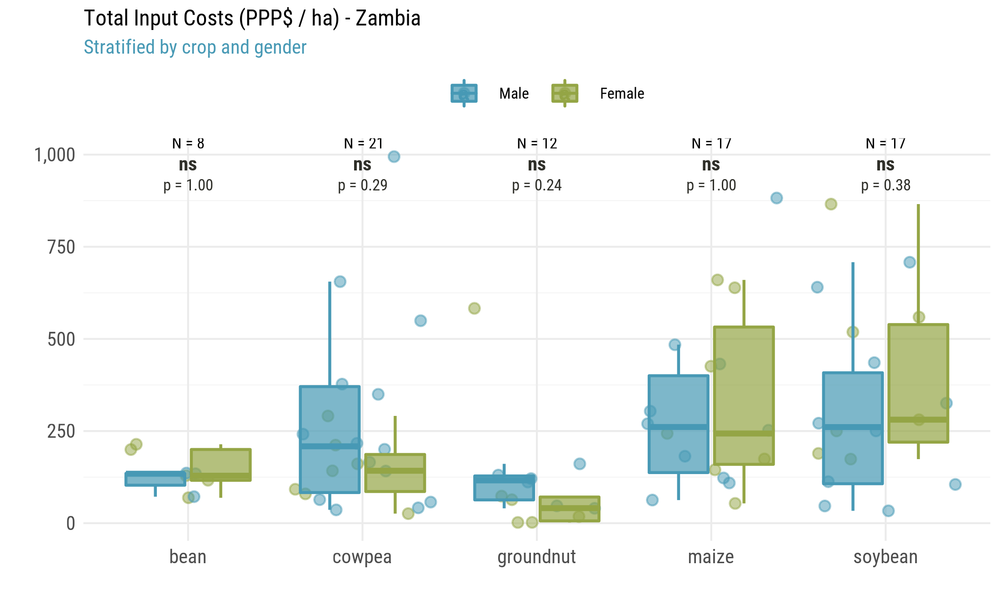
ggBoxTest(hh[!hhid %in% outlier],
aes(crop, costs_ha_ppp, color=group, fill=group),
grp.c=aes(group=crop), grp.s=aes(group=group)) +
scale_y_continuous(labels=comma) +
labs(x="", y="", fill="", color="",
title="Total Input Costs (PPP$ / ha) - Zambia",
subtitle="Stratified by crop") +
theme_def(legend.position="top")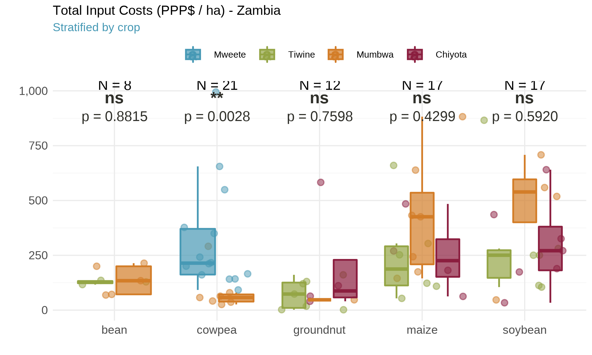
Breakdown across categories of farm input.
ttt(ppp ~ type | gender+crop, data=hh_prod_cost, render=fmt,
caption="Input Costs in Absolute Terms by Gender (PPP$ / ha) - Zambia")| type | Statistic | bean | cowpea | groundnut | maize | soybean | |||||
|---|---|---|---|---|---|---|---|---|---|---|---|
| Male | Female | Male | Female | Male | Female | Male | Female | Male | Female | ||
| Seeds | mean | 65 | 52 | 35 | 36 | 35 | 36 | 26 | 24 | 63 | 74 |
| median | 54 | 0 | 35 | 38 | 18 | 0 | 14 | 18 | 14 | 0 | |
| sd | 49 | 77 | 8 | 10 | 43 | 88 | 33 | 28 | 104 | 128 | |
| Fertilizer | mean | 0 | 42 | 74 | 66 | 24 | 0 | 194 | 353 | 48 | 126 |
| median | 0 | 45 | 35 | 54 | 0 | 0 | 141 | 209 | 1 | 111 | |
| sd | 0 | 41 | 98 | 73 | 58 | 0 | 195 | 421 | 78 | 149 | |
| Pesticides | mean | 9 | 13 | 69 | 28 | 2 | 11 | 30 | 33 | 57 | 46 |
| median | 11 | 9 | 64 | 36 | 0 | 0 | 0 | 30 | 22 | 8 | |
| sd | 8 | 19 | 70 | 25 | 5 | 26 | 84 | 29 | 110 | 79 | |
| Labor | mean | 18 | 22 | 54 | 3 | 27 | 24 | 44 | 79 | 89 | 135 |
| median | 0 | 31 | 18 | 0 | 0 | 9 | 0 | 36 | 64 | 54 | |
| sd | 31 | 21 | 77 | 7 | 50 | 31 | 67 | 122 | 97 | 138 | |
| Marketing | mean | 22 | 17 | 60 | 10 | 15 | 53 | 15 | 22 | 36 | 24 |
| median | 29 | 12 | 3 | 4 | 12 | 2 | 13 | 21 | 8 | 18 | |
| sd | 20 | 13 | 139 | 14 | 15 | 123 | 12 | 21 | 54 | 29 | |
tbl <- hh_prod_cost[, .(
ppp = mean(ppp, na.rm=T)
), keyby=.(gender, crop, type)]
ggplot(tbl, aes(gender, ppp, fill=type)) +
geom_bar(stat="identity", position="fill", alpha=.7, width=.6, color="white") +
scale_y_continuous(labels=percent) +
facet_wrap(~crop, nrow=1) +
labs(y="", x="", fill="",
title="Breakdown of Input Costs by Category - Zambia",
subtitle="Stratified by crop and gender") +
theme_def(legend.position="right")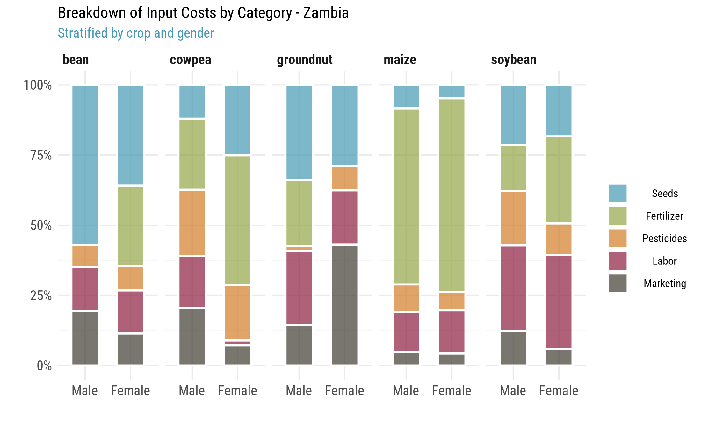
ttt(ppp ~ type | years+crop, data=hh_prod_cost, render=fmt,
caption="Input Costs in Absolute Terms by Years in Seed Group (PPP$ / ha) - Zambia")| type | Statistic | bean | cowpea | groundnut | maize | soybean | |||||
|---|---|---|---|---|---|---|---|---|---|---|---|
| < 5 | ≥ 5 | < 5 | ≥ 5 | < 5 | ≥ 5 | < 5 | ≥ 5 | < 5 | ≥ 5 | ||
| Seeds | mean | 57 | 57 | 36 | 18 | 36 | 35 | 48 | 21 | 79 | 61 |
| median | 54 | 0 | 36 | 18 | 36 | 0 | 36 | 0 | 14 | 0 | |
| sd | 48 | 99 | 8 | NA | NA | 69 | 21 | 30 | 119 | 112 | |
| Fertilizer | mean | 18 | 40 | 75 | 0 | 0 | 13 | 233 | 271 | 24 | 110 |
| median | 0 | 45 | 55 | 0 | 0 | 0 | 179 | 179 | 0 | 89 | |
| sd | 40 | 38 | 89 | NA | NA | 43 | 176 | 341 | 58 | 130 | |
| Pesticides | mean | 7 | 18 | 58 | 0 | 11 | 6 | 5 | 37 | 45 | 56 |
| median | 9 | 9 | 54 | 0 | 11 | 0 | 0 | 0 | 16 | 27 | |
| sd | 7 | 24 | 62 | NA | NA | 19 | 8 | 69 | 84 | 106 | |
| Labor | mean | 18 | 25 | 39 | 0 | 0 | 28 | 1 | 71 | 34 | 149 |
| median | 0 | 31 | 0 | 0 | 0 | 0 | 0 | 36 | 28 | 179 | |
| sd | 25 | 23 | 68 | NA | NA | 41 | 2 | 99 | 35 | 122 | |
| Marketing | mean | 22 | 13 | 45 | 8 | 0 | 37 | 13 | 19 | 8 | 44 |
| median | 29 | 9 | 3 | 8 | 0 | 5 | 19 | 14 | 5 | 29 | |
| sd | 16 | 13 | 117 | NA | NA | 89 | 10 | 17 | 8 | 51 | |
tbl <- hh_prod_cost[, .(
ppp = mean(ppp, na.rm=T)
), keyby=.(years, crop, type)]
ggplot(tbl, aes(years, ppp, fill=type)) +
geom_bar(stat="identity", position="fill", alpha=.7, width=.6, color="white") +
scale_y_continuous(labels=percent) +
facet_wrap(~crop, nrow=1) +
labs(y="", x="",
title="Breakdown of Input Costs by Category - Zambia",
subtitle="Stratified by crop and years in seed club") +
theme_def(legend.position="right")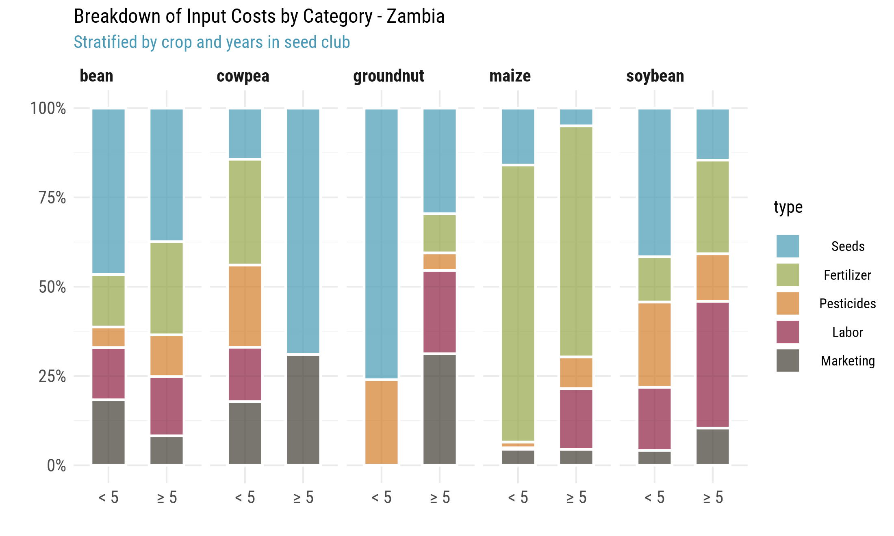
ttt(ppp ~ type | group+crop, data=hh_prod_cost, render=fmt,
caption="Input Costs in Absolute Terms by Seed Group (PPP$ / ha) - Zambia")| type | Statistic | bean | cowpea | groundnut | maize | soybean | ||||||||
|---|---|---|---|---|---|---|---|---|---|---|---|---|---|---|
| Tiwine | Mumbwa | Mweete | Mumbwa | Tiwine | Mumbwa | Chiyota | Tiwine | Mumbwa | Chiyota | Tiwine | Mumbwa | Chiyota | ||
| Seeds | mean | 18 | 81 | 38 | 30 | 14 | 36 | 72 | 4 | 46 | 27 | 27 | 149 | 56 |
| median | 0 | 89 | 38 | 31 | 0 | 36 | 36 | 0 | 36 | 18 | 0 | 140 | 0 | |
| sd | 31 | 70 | 7 | 8 | 38 | NA | 101 | 11 | 29 | 34 | 66 | 131 | 120 | |
| Fertilizer | mean | 40 | 18 | 88 | 39 | 20 | 0 | 0 | 316 | 278 | 152 | 86 | 101 | 62 |
| median | 45 | 0 | 69 | 0 | 0 | 0 | 0 | 104 | 238 | 89 | 18 | 81 | 89 | |
| sd | 38 | 40 | 91 | 79 | 54 | NA | 0 | 456 | 206 | 203 | 169 | 121 | 60 | |
| Pesticides | mean | 15 | 9 | 77 | 13 | 0 | 11 | 16 | 21 | 60 | 0 | 22 | 155 | 20 |
| median | 0 | 9 | 64 | 0 | 0 | 11 | 0 | 0 | 17 | 0 | 13 | 121 | 8 | |
| sd | 26 | 6 | 65 | 19 | 0 | NA | 32 | 29 | 95 | 0 | 28 | 165 | 32 | |
| Labor | mean | 33 | 13 | 55 | 0 | 31 | 0 | 22 | 100 | 20 | 58 | 165 | 28 | 106 |
| median | 45 | 0 | 27 | 0 | 0 | 0 | 18 | 54 | 4 | 27 | 145 | 27 | 45 | |
| sd | 29 | 18 | 76 | 0 | 49 | NA | 27 | 131 | 27 | 84 | 131 | 32 | 111 | |
| Marketing | mean | 21 | 17 | 64 | 3 | 7 | 0 | 90 | 23 | 16 | 13 | 11 | 26 | 51 |
| median | 27 | 12 | 23 | 3 | 2 | 0 | 25 | 21 | 6 | 14 | 8 | 10 | 29 | |
| sd | 11 | 18 | 138 | 3 | 8 | NA | 144 | 17 | 19 | 8 | 11 | 39 | 59 | |
tbl <- hh_prod_cost[, .(
ppp = mean(ppp, na.rm=T)
), keyby=.(group, crop, type)]
ggplot(tbl, aes(group, ppp, fill=type)) +
geom_bar(stat="identity", position="fill", alpha=.7, width=.6, color="white") +
scale_y_continuous(labels=percent) +
facet_wrap(~crop, scales="free_x", nrow=1) +
labs(y="", x="",
title="Breakdown of Input Costs by Category - Zambia",
subtitle="Stratified by crop and seed club") +
theme_def(legend.position="top")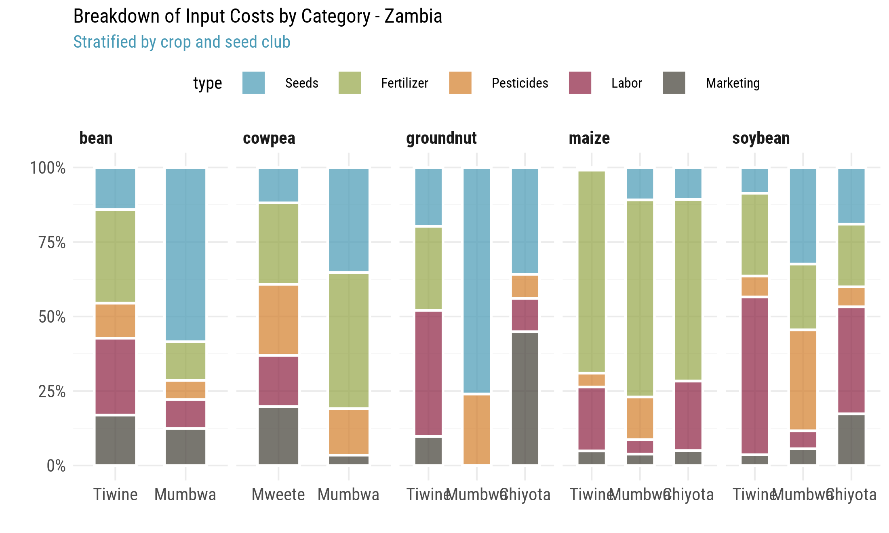
Are there significant differences across groups? We first compare input cost shares across gender, then across seed clubs.
ggBoxTest(hh_prod_cost[!type %in% c("Seeds")],
aes(type, share, color=gender, fill=gender),
grp.c=aes(group=type), grp.s=aes(group=gender), jitter=F) +
scale_y_continuous(labels=percent) +
#facet_wrap(~crop) +
labs(x="", y="", fill="", color="",
title="Input Costs by Category (Percent of Total Costs by Ha) - Zambia",
subtitle="Stratified by gender") +
theme_def(legend.position="right")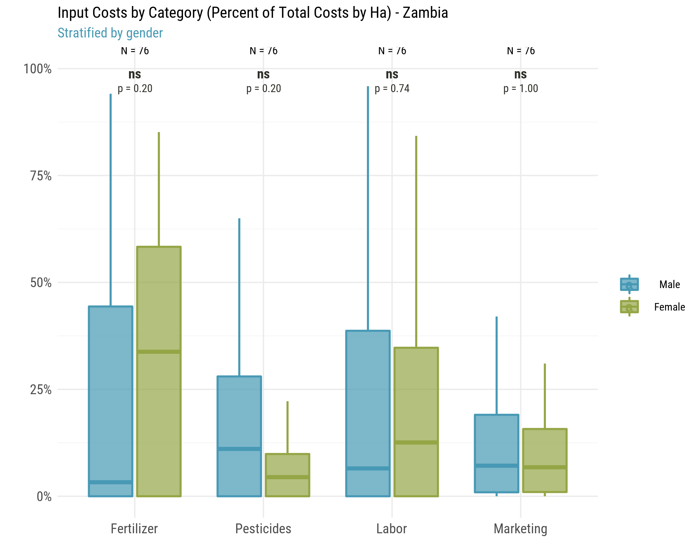
Differences across years in seed club.
ggBoxTest(hh_prod_cost[!type %in% c("Seeds")],
aes(type, share, color=years, fill=years),
grp.c=aes(group=type), grp.s=aes(group=years), jitter=F) +
scale_y_continuous(labels=percent) +
#facet_wrap(~crop) +
labs(x="", y="", fill="", color="",
title="Input Costs by Category (Percent of Total Costs by Ha) - Zambia",
subtitle="Stratified by years in seed club") +
theme_def(legend.position="right")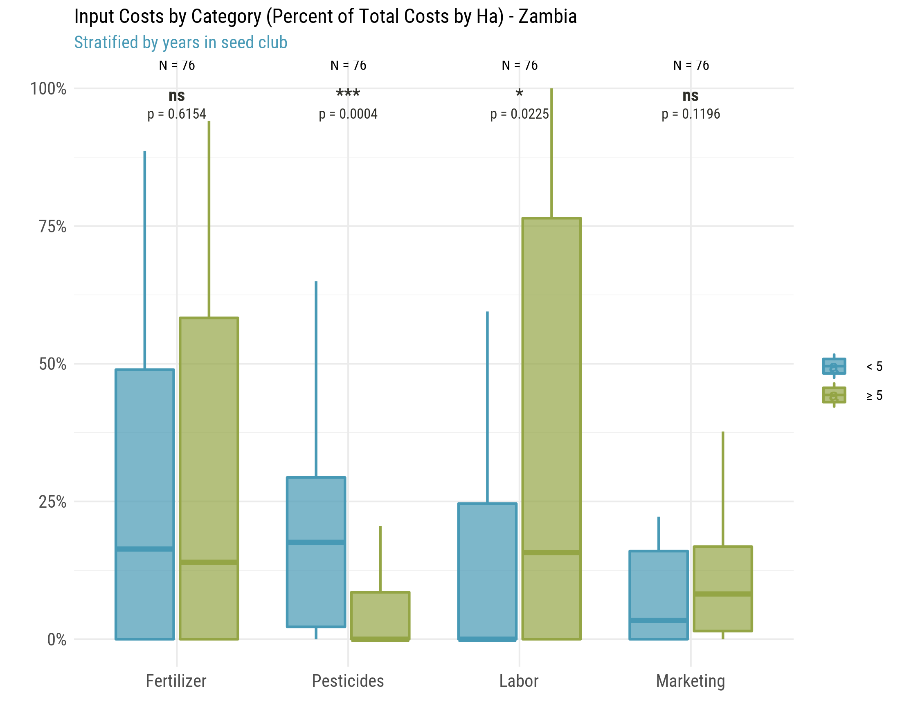
Differences across seed clubs.
ggBoxTest(hh_prod_cost[!type %in% c("Seeds")],
aes(type, share, color=group, fill=group),
grp.c=aes(group=type), grp.s=aes(group=group), jitter=F) +
scale_y_continuous(labels=percent) +
#facet_wrap(~crop) +
labs(x="", y="", fill="", color="",
title="Input Costs by Category (PPP$ by Hectare) - Zambia",
subtitle="Stratified by seed club") +
theme_def(legend.position="right")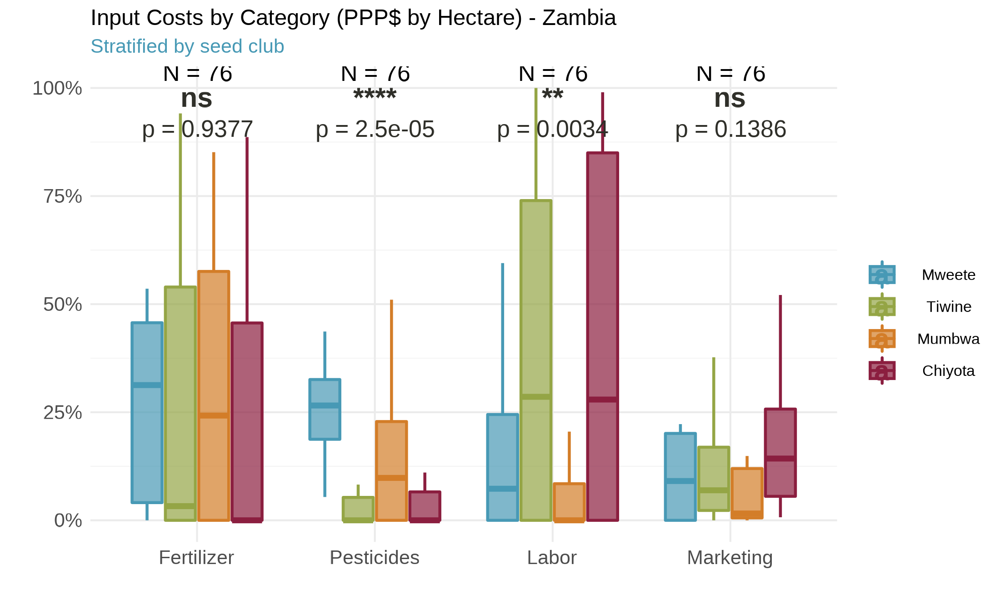
Differences across crops.
ggBoxTest(hh_prod_cost[!type %in% c("Seeds")],
aes(type, share, color=crop, fill=crop),
grp.c=aes(group=type), grp.s=aes(group=crop), jitter=F) +
scale_y_continuous(labels=percent) +
labs(x="", y="", fill="", color="",
title="Input Costs by Category (PPP$ by Hectare) - Zambia",
subtitle="Stratified by crop") +
theme_def(legend.position="top")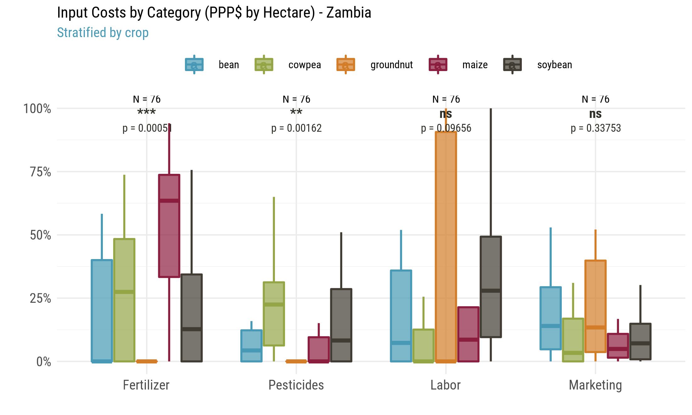
Efficiency
Differences in productivity measures (expected seed yields and actual sales) across groups.
ttt(yield_ha_kg ~ group | gender+crop, data=hh, render=fmt,
caption="Expected Seed Yield (kg / ha) - Zambia")| group | Statistic | bean | cowpea | groundnut | maize | soybean | |||||
|---|---|---|---|---|---|---|---|---|---|---|---|
| Male | Female | Male | Female | Male | Female | Male | Female | Male | Female | ||
| Mweete | mean | NA | NA | 610 | 330 | NA | NA | NA | NA | NA | NA |
| median | NA | NA | 500 | 300 | NA | NA | NA | NA | NA | NA | |
| sd | NA | NA | 476 | 203 | NA | NA | NA | NA | NA | NA | |
| Tiwine | mean | 200 | 200 | NA | NA | 1,267 | 262 | 762 | 4,567 | 925 | 1,090 |
| median | 200 | 200 | NA | NA | 1,400 | 325 | 400 | 2,500 | 875 | 750 | |
| sd | NA | 0 | NA | NA | 808 | 189 | 829 | 4,382 | 254 | 1,294 | |
| Mumbwa | mean | 654 | 720 | 258 | 467 | 500 | NA | 1,552 | 1,417 | 925 | 2,137 |
| median | 654 | 875 | 200 | 350 | 500 | NA | 1,552 | 1,000 | 925 | 2,137 | |
| sd | 264 | 622 | 193 | 293 | NA | NA | 2,047 | 994 | 106 | 689 | |
| Chiyota | mean | NA | NA | NA | NA | 600 | 860 | 1,538 | NA | 772 | 310 |
| median | NA | NA | NA | NA | 600 | 860 | 1,825 | NA | 400 | 310 | |
| sd | NA | NA | NA | NA | 212 | 1,047 | 849 | NA | 973 | 198 | |
ttt(sales_ha_kg ~ group | gender+crop, data=hh, render=fmt,
caption="Realized Seed Sales (kg / ha) - Zambia")| group | Statistic | bean | cowpea | groundnut | maize | soybean | |||||
|---|---|---|---|---|---|---|---|---|---|---|---|
| Male | Female | Male | Female | Male | Female | Male | Female | Male | Female | ||
| Mweete | mean | NA | NA | 509 | 425 | NA | NA | NA | NA | NA | NA |
| median | NA | NA | 500 | 300 | NA | NA | NA | NA | NA | NA | |
| sd | NA | NA | 328 | 397 | NA | NA | NA | NA | NA | NA | |
| Tiwine | mean | 0 | 650 | NA | NA | 333 | 162 | 288 | 333 | 567 | 670 |
| median | 0 | 650 | NA | NA | 300 | 200 | 325 | 0 | 350 | 750 | |
| sd | NA | 495 | NA | NA | 252 | 111 | 217 | 577 | 375 | 634 | |
| Mumbwa | mean | 820 | 578 | 375 | 483 | 1,000 | NA | 1,605 | 1,500 | 1,425 | 5,325 |
| median | 820 | 750 | 200 | 400 | 1,000 | NA | 1,605 | 200 | 1,425 | 5,325 | |
| sd | 28 | 481 | 421 | 236 | NA | NA | 1,973 | 2,112 | 813 | 5,197 | |
| Chiyota | mean | NA | NA | NA | NA | 475 | 460 | 1,400 | NA | 680 | 300 |
| median | NA | NA | NA | NA | 475 | 460 | 1,575 | NA | 300 | 300 | |
| sd | NA | NA | NA | NA | 35 | 481 | 912 | NA | 1,026 | 212 | |
ttt(yield_ha_kg ~ group | years+crop, data=hh, render=fmt,
caption="Realized Seed Sales (kg / ha) - Zambia")| group | Statistic | bean | cowpea | groundnut | maize | soybean | |||||
|---|---|---|---|---|---|---|---|---|---|---|---|
| < 5 | ≥ 5 | < 5 | ≥ 5 | < 5 | ≥ 5 | < 5 | ≥ 5 | < 5 | ≥ 5 | ||
| Mweete | mean | NA | NA | 530 | NA | NA | NA | NA | NA | NA | NA |
| median | NA | NA | 450 | NA | NA | NA | NA | NA | NA | NA | |
| sd | NA | NA | 429 | NA | NA | NA | NA | NA | NA | NA | |
| Tiwine | mean | 200 | 200 | NA | NA | NA | 693 | NA | 2,393 | 950 | 1,036 |
| median | 200 | 200 | NA | NA | NA | 400 | NA | 1,600 | 950 | 812 | |
| sd | NA | 0 | NA | NA | NA | 724 | NA | 3,298 | 354 | 1,062 | |
| Mumbwa | mean | 858 | 35 | 364 | 250 | 500 | NA | 200 | 1,665 | 1,325 | 1,737 |
| median | 858 | 35 | 300 | 250 | 500 | NA | 200 | 1,666 | 1,325 | 1,737 | |
| sd | 320 | NA | 264 | NA | NA | NA | NA | 1,125 | 460 | 1,254 | |
| Chiyota | mean | NA | NA | NA | NA | NA | 730 | 2,150 | 925 | 190 | 820 |
| median | NA | NA | NA | NA | NA | 600 | 2,150 | 925 | 190 | 450 | |
| sd | NA | NA | NA | NA | NA | 635 | 0 | 813 | 28 | 944 | |
ttt(sales_ha_kg ~ group | years+crop, data=hh, render=fmt,
caption="Realized Seed Sales (kg / ha) - Zambia")| group | Statistic | bean | cowpea | groundnut | maize | soybean | |||||
|---|---|---|---|---|---|---|---|---|---|---|---|
| < 5 | ≥ 5 | < 5 | ≥ 5 | < 5 | ≥ 5 | < 5 | ≥ 5 | < 5 | ≥ 5 | ||
| Mweete | mean | NA | NA | 485 | NA | NA | NA | NA | NA | NA | NA |
| median | NA | NA | 425 | NA | NA | NA | NA | NA | NA | NA | |
| sd | NA | NA | 335 | NA | NA | NA | NA | NA | NA | NA | |
| Tiwine | mean | 0 | 650 | NA | NA | NA | 236 | NA | 307 | 350 | 752 |
| median | 0 | 650 | NA | NA | NA | 200 | NA | 250 | 350 | 875 | |
| sd | NA | 495 | NA | NA | NA | 189 | NA | 368 | 0 | 543 | |
| Mumbwa | mean | 835 | 35 | 367 | 750 | 1,000 | NA | 100 | 1,768 | 1,825 | 4,925 |
| median | 820 | 35 | 275 | 750 | 1,000 | NA | 100 | 1,105 | 1,825 | 4,925 | |
| sd | 85 | NA | 328 | NA | NA | NA | NA | 1,968 | 247 | 5,763 | |
| Chiyota | mean | NA | NA | NA | NA | NA | 468 | 2,150 | 650 | 75 | 770 |
| median | NA | NA | NA | NA | NA | 475 | 2,150 | 650 | 75 | 300 | |
| sd | NA | NA | NA | NA | NA | 278 | 0 | 495 | 106 | 969 | |
Differences in efficiency measures across gender with mean comparison (Wilcoxon) p-value. Note the we take out outlying values.
outlier <- c(
hh[yield_ha_kg > median(yield_ha_kg) + 3*sd(yield_ha_kg), hhid],
hh[sales_ha_ppp > median(sales_ha_ppp) + 3*sd(yield_ha_kg), hhid]
)
kbl(caption="Respondents with yields or sales > median + 3*sd",
hh[hhid %in% outlier, .(hhid, code, group, crop, yield_ha_kg, sales_ha_ppp)],
format.args=list(big.mark=","))| hhid | code | group | crop | yield_ha_kg | sales_ha_ppp |
|---|---|---|---|---|---|
| ZMB021 | FARMER16 | Tiwine | maize | 9,600 | 0.000 |
| ZMB045 | FARMER46 | Mumbwa | maize | 2,333 | 6,797.853 |
| ZMB049 | FARMER45 | Mumbwa | soybean | 2,624 | 12,880.143 |
| ZMB075 | FARMER39 | Chiyota | soybean | 2,500 | 4,472.272 |
ggBoxTest(hh[!hhid %in% outlier],
aes(crop, yield_ha_kg, color=gender, fill=gender),
grp.c=aes(group=crop), grp.s=aes(group=gender)) +
scale_y_continuous(labels=comma) +
labs(x="", y="", fill="", color="",
title="Expected Seed Yield (kg / ha) - Zambia",
subtitle="Stratified by crop and gender") +
theme_def(legend.position="top")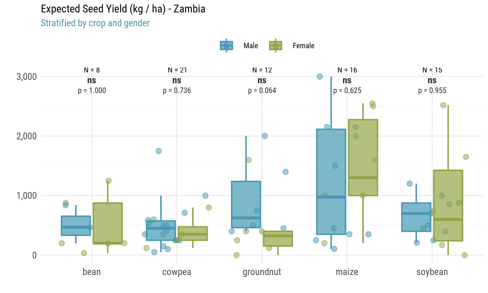
ggBoxTest(hh[!hhid %in% outlier],
aes(crop, sales_ha_ppp, color=gender, fill=gender),
grp.c=aes(group=crop), grp.s=aes(group=gender)) +
scale_y_continuous(labels=comma) +
labs(x="", y="", fill="", color="",
title="Total Seed Sales (PPP$ / ha) - Zambia",
subtitle="Stratified by gender") +
theme_def(legend.position="top")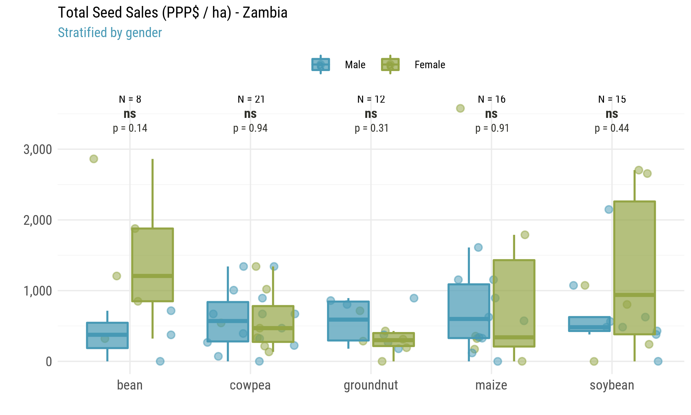
Differences in efficiency measures by years in seed club with mean comparison (Wilcoxon) p-value.
ggBoxTest(hh[!hhid %in% outlier],
aes(crop, yield_ha_kg, color=years, fill=years),
grp.c=aes(group=crop), grp.s=aes(group=years)) +
scale_y_continuous(labels=comma) +
labs(x="", y="", fill="", color="",
title="Expected Seed Yield (kg / ha) - Zambia",
subtitle="Stratified crop and by years in seed club") +
theme_def(legend.position="top")
ggBoxTest(hh[!hhid %in% outlier],
aes(crop, sales_ha_ppp, color=years, fill=years),
grp.c=aes(group=crop), grp.s=aes(group=years)) +
scale_y_continuous(labels=comma) +
labs(x="", y="", fill="", color="",
title="Total Seed Sales (PPP$ / ha) - Zambia",
subtitle="Stratified crop and by years in seed club") +
theme_def(legend.position="top")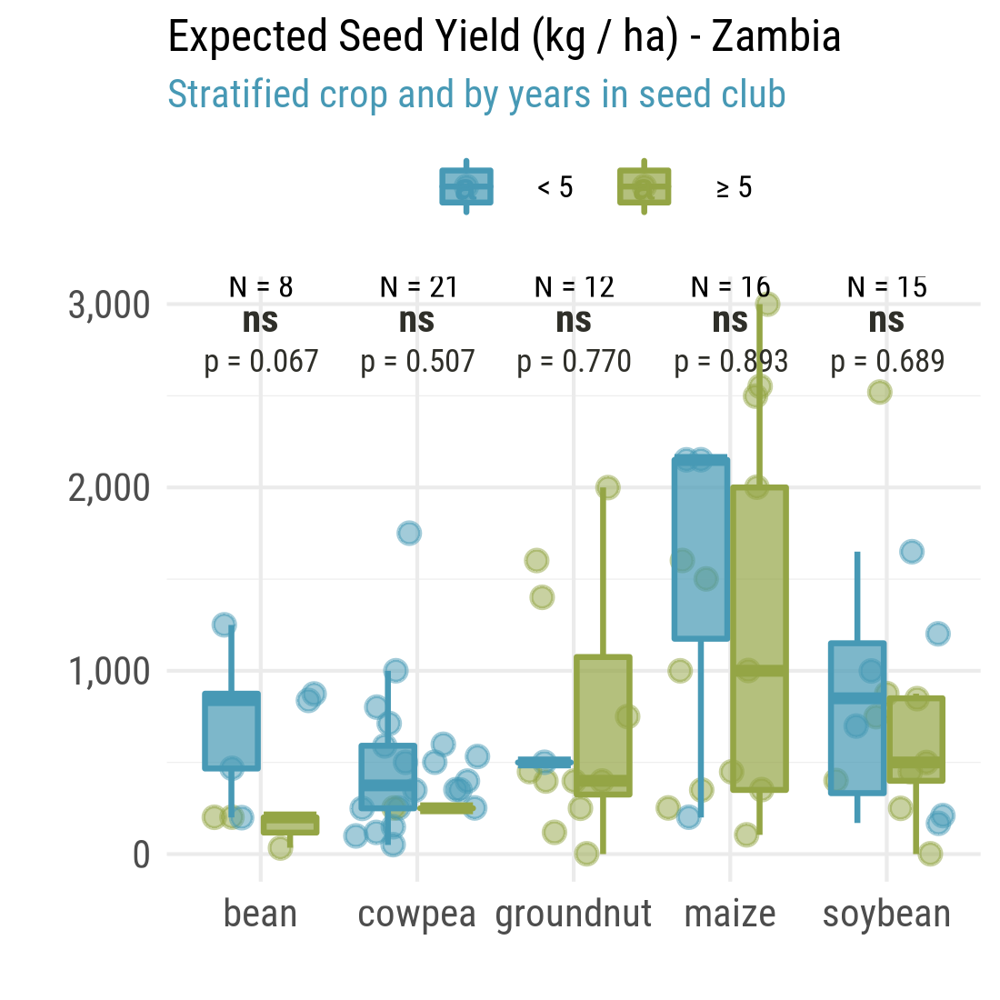
Differences in efficiency measures across seed clubs with global ANOVA p-value.
ggBoxTest(hh[!hhid %in% outlier],
aes(crop, yield_ha_kg, color=group, fill=group),
grp.c=aes(group=crop), grp.s=aes(group=group)) +
scale_x_discrete(labels=label_wrap(5)) +
scale_y_continuous(labels=comma) +
labs(x="", y="", fill="", color="",
title="Expected Seed Yield (Kg / ha) - Zambia",
subtitle="Stratified by crop and seed club") +
theme_def(legend.position="top")
ggBoxTest(hh[!hhid %in% outlier],
aes(crop, sales_ha_ppp, color=group, fill=group),
grp.c=aes(group=crop), grp.s=aes(group=group)) +
scale_x_discrete(labels=label_wrap(5)) +
scale_y_continuous(labels=comma) +
labs(x="", y="", fill="", color="",
title="Total Seed Sales (PPP$ / ha) - Zambia",
subtitle="Stratified crop by seed club") +
theme_def(legend.position="top")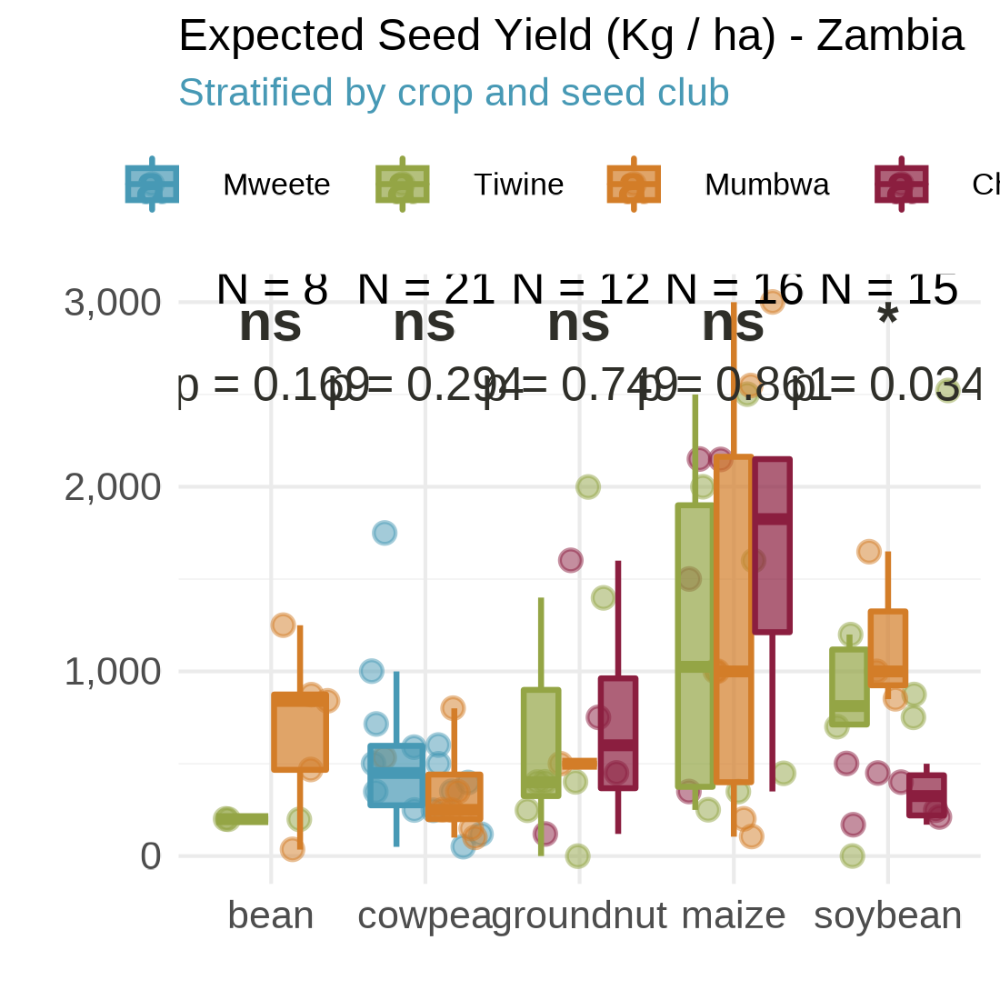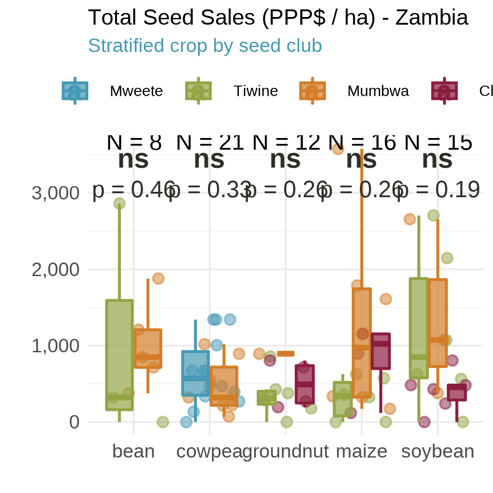
Looking at production frontiers (units of output vs. units of input). We expect S-shape curves with farmers at different levels of technical efficiency along the curve.
Note that in the approximated curves below we remove outliers with total input costs over PPP$ 1,700 per ha.
outlier <- hh[costs_ha_ppp > median(costs_ha_ppp) + 3*sd(costs_ha_ppp), hhid]
kbl(
caption="Farmers with total input costs > median + 3*sd",
hh[hhid %in% outlier, .(hhid, group, crop, yield_ha_kg, costs_ha_ppp)],
format.args=list(big.mark=",", digits=0))| hhid | group | crop | yield_ha_kg | costs_ha_ppp |
|---|---|---|---|---|
| ZMB021 | Tiwine | maize | 9,600 | 1,746 |
ggplot(hh[!hhid %in% outlier], aes(costs_ha_ppp, yield_ha_kg)) +
geom_smooth(size=.8) +
geom_point(alpha=.7, shape=20, color=1) +
scale_x_continuous(labels=comma) +
scale_y_continuous(labels=comma) +
facet_wrap(~crop, scales="free", nrow=1) +
labs(x="", y="",
title="Production Frontier (Output vs. Input) - Zambia",
subtitle="Each point is a respondent. Shade shows 90% CI (kg vs. PPP$ / ha)") +
theme_def(legend.position="none")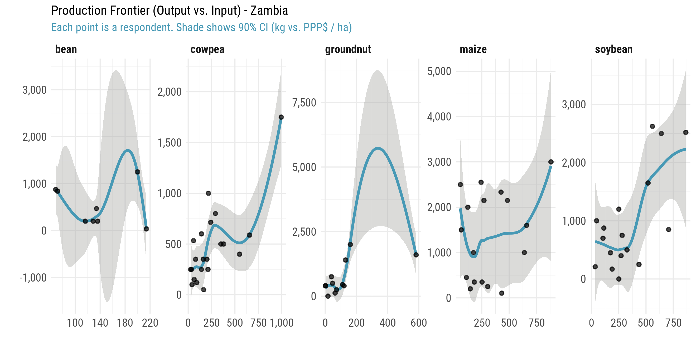
Profitability
Farmers’ gross profit margins by crop, gender, and years in seed club.
ttt(margin_ha_ppp ~ group+crop | gender+years, data=hh, render=fmt,
caption="Mean Gross Profit Margin in Absolute Terms (PPP$ / ha) - Zambia")| group | crop | Statistic | < 5 | ≥ 5 | ||
|---|---|---|---|---|---|---|
| Male | Female | Male | Female | |||
| Mweete | cowpea | mean | 294 | 418 | NA | NA |
| median | 307 | 216 | NA | NA | ||
| sd | 344 | 532 | NA | NA | ||
| Tiwine | bean | mean | -136 | NA | NA | 1,470 |
| median | -136 | NA | NA | 1,470 | ||
| sd | NA | NA | NA | 1,805 | ||
| groundnut | mean | NA | NA | 334 | 233 | |
| median | NA | NA | 255 | 298 | ||
| sd | NA | NA | 362 | 170 | ||
| maize | mean | NA | NA | 184 | -701 | |
| median | NA | NA | 269 | -302 | ||
| sd | NA | NA | 379 | 914 | ||
| soybean | mean | 417 | NA | 2,034 | 794 | |
| median | 417 | NA | 2,034 | 792 | ||
| sd | 147 | NA | NA | 1,045 | ||
| Mumbwa | bean | mean | 443 | 894 | NA | 1,664 |
| median | 443 | 894 | NA | 1,664 | ||
| sd | 196 | 346 | NA | NA | ||
| cowpea | mean | 328 | 194 | NA | 994 | |
| median | 223 | 194 | NA | 994 | ||
| sd | 352 | 83 | NA | NA | ||
| groundnut | mean | 847 | NA | NA | NA | |
| median | 847 | NA | NA | NA | ||
| maize | mean | NA | 3,433 | 317 | 1,900 | |
| median | NA | 3,433 | 317 | 847 | ||
| sd | NA | NA | 581 | 3,098 | ||
| soybean | mean | 1,027 | 2,138 | -328 | 12,321 | |
| median | 1,027 | 2,138 | -328 | 12,321 | ||
| Chiyota | groundnut | mean | NA | NA | 461 | 131 |
| median | NA | NA | 461 | 131 | ||
| sd | NA | NA | 329 | 2 | ||
| maize | mean | 777 | NA | 384 | NA | |
| median | 777 | NA | 384 | NA | ||
| sd | 152 | NA | 633 | NA | ||
| soybean | mean | -34 | 52 | 1,049 | 631 | |
| median | -34 | 52 | 158 | 631 | ||
| sd | NA | NA | 1,856 | NA | ||
ttt(margin_ha_sh ~ group+crop | gender+years, data=hh, render=fmt_pct,
caption="Mean Gross Profit Margin in Relative Terms (% of variable input costs) - Zambia")| group | crop | Statistic | < 5 | ≥ 5 | ||
|---|---|---|---|---|---|---|
| Male | Female | Male | Female | |||
| Mweete | cowpea | mean | 97% | 285% | NA | NA |
| median | 91% | 125% | NA | NA | ||
| sd | 126% | 378% | NA | NA | ||
| Tiwine | bean | mean | -100% | NA | NA | 1 256% |
| median | -100% | NA | NA | 1 256% | ||
| sd | NA | NA | NA | 1 564% | ||
| groundnut | mean | NA | NA | 260% | 7 546% | |
| median | NA | NA | 211% | 7 193% | ||
| sd | NA | NA | 276% | 8 534% | ||
| maize | mean | NA | NA | 191% | -82% | |
| median | NA | NA | 220% | -100% | ||
| sd | NA | NA | 267% | 31% | ||
| soybean | mean | 310% | NA | 1 805% | 132% | |
| median | 310% | NA | 1 805% | 212% | ||
| sd | 262% | NA | NA | 204% | ||
| Mumbwa | bean | mean | 428% | 989% | NA | 777% |
| median | 428% | 989% | NA | 777% | ||
| sd | 7% | 939% | NA | NA | ||
| cowpea | mean | 614% | 128% | NA | 3 831% | |
| median | 461% | 128% | NA | 3 831% | ||
| sd | 596% | 59% | NA | NA | ||
| groundnut | mean | 1 801% | NA | NA | NA | |
| median | 1 801% | NA | NA | NA | ||
| maize | mean | NA | 2 369% | 30% | 536% | |
| median | NA | 2 369% | 30% | 360% | ||
| sd | NA | NA | 74% | 709% | ||
| soybean | mean | 2 208% | 412% | -46% | 2 203% | |
| median | 2 208% | 412% | -46% | 2 203% | ||
| Chiyota | groundnut | mean | NA | NA | 595% | 113% |
| median | NA | NA | 595% | 113% | ||
| sd | NA | NA | 40% | 128% | ||
| maize | mean | 233% | NA | 647% | NA | |
| median | 233% | NA | 647% | NA | ||
| sd | 134% | NA | 964% | NA | ||
| soybean | mean | -100% | 28% | 179% | 363% | |
| median | -100% | 28% | 53% | 363% | ||
| sd | NA | NA | 280% | NA | ||
Note that 14 respondents show negative margins.
kbl(caption="Respondents with negative gross margins.",
hh[margin_ha_ppp < 0,
.(hhid, code, group, crop, costs_ha_ppp, yield_ha_kg, sales_ha_kg, margin_ha_ppp)],
format.args=list(big.mark=",", digits=1))| hhid | code | group | crop | costs_ha_ppp | yield_ha_kg | sales_ha_kg | margin_ha_ppp |
|---|---|---|---|---|---|---|---|
| ZMB011 | FARMER9 | Mweete | cowpea | 655 | 588 | 294 | -261 |
| ZMB012 | FARMER10 | Mweete | cowpea | 165 | 50 | 0 | -165 |
| ZMB017 | FARMER17 | Tiwine | groundnut | 18 | 0 | 0 | -18 |
| ZMB021 | FARMER16 | Tiwine | maize | 1,746 | 9,600 | 0 | -1,746 |
| ZMB022 | FARMER17 | Tiwine | maize | 660 | 1,600 | 1,000 | -302 |
| ZMB023 | FARMER27 | Tiwine | maize | 54 | 2,500 | 0 | -54 |
| ZMB025 | FARMER17 | Tiwine | soybean | 250 | 0 | 0 | -250 |
| ZMB027 | FARMER19 | Tiwine | bean | 136 | 200 | 0 | -136 |
| ZMB031 | FARMER15 | Tiwine | maize | 304 | 250 | 0 | -304 |
| ZMB047 | FARMER48 | Mumbwa | maize | 639 | 1,000 | 200 | -467 |
| ZMB059 | FARMER51 | Mumbwa | maize | 432 | 105 | 210 | -94 |
| ZMB061 | FARMER52 | Mumbwa | soybean | 708 | 850 | 850 | -328 |
| ZMB068 | FARMER29 | Chiyota | maize | 182 | 350 | 300 | -64 |
| ZMB076 | FARMER41 | Chiyota | soybean | 34 | 210 | 0 | -34 |
outlier <- c(
hh[margin_ha_ppp > median(margin_ha_ppp) + 3*sd(margin_ha_ppp), hhid],
hh[margin_ha_sh > median(margin_ha_sh) + 3*sd(margin_ha_sh), hhid]
)
kbl(caption="Respondents with gross margins > median + 3*sd",
hh[hhid %in% outlier,
.(hhid, code, group, crop, costs_ha_ppp, yield_ha_kg, sales_ha_kg,
margin_ha_ppp, margin_ha_sh)],
format.args=list(big.mark=",", digits=1))| hhid | code | group | crop | costs_ha_ppp | yield_ha_kg | sales_ha_kg | margin_ha_ppp | margin_ha_sh |
|---|---|---|---|---|---|---|---|---|
| ZMB018 | FARMER21 | Tiwine | groundnut | 2 | 400 | 250 | 311 | 139 |
| ZMB020 | FARMER28 | Tiwine | groundnut | 2 | 400 | 200 | 284 | 159 |
| ZMB045 | FARMER46 | Mumbwa | maize | 426 | 2,333 | 5,000 | 6,372 | 15 |
| ZMB049 | FARMER45 | Mumbwa | soybean | 559 | 2,624 | 9,000 | 12,321 | 22 |
ggplot(hh, aes(x=hhid, color=group)) +
geom_hline(aes(yintercept=0), color=1) +
geom_linerange(aes(ymin=0, ymax=margin_ha_ppp), size=.6) +
geom_point(aes(y=0), shape=20, size=1.4) +
geom_point(aes(y=margin_ha_ppp, shape=margin_ha_ppp < 0, fill=group), size=1.4) +
scale_y_continuous(labels=comma) +
scale_shape_manual(values=24:25) +
guides(x="none", shape="none") +
labs(x=NULL, y=NULL, color="", fill="",
title="Profit Margin (PPP$ / ha) - Zambia",
subtitle="Each bar is a respondent's gross profit margin") +
theme_def(
legend.position="right",
panel.grid.major.x=element_blank()
)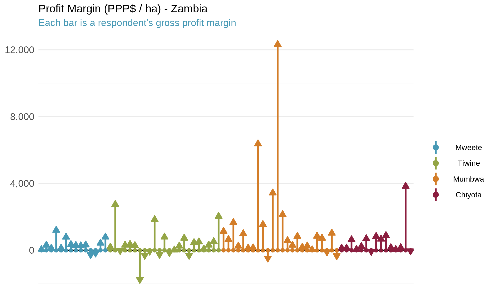
Farmers’ gross profit margins by gender and across groups in both absolute and relative terms (as percentage of total costs per hectare).
ggBoxTest(hh[!hhid %in% outlier],
aes(crop, margin_ha_ppp, color=gender, fill=gender),
grp.c=aes(group=crop), grp.s=aes(group=gender)) +
scale_y_continuous(labels=comma) +
labs(x="", y="", fill="", color="",
title="Gross Profit Margin in Absolute Terms - Zambia",
subtitle="Stratified by crop and gender (PPP$ / ha)") +
theme_def(legend.position="top")
ggBoxTest(hh[!hhid %in% outlier],
aes(crop, margin_ha_sh, color=gender, fill=gender),
grp.c=aes(group=crop), grp.s=aes(group=gender)) +
scale_y_continuous(labels=percent) +
labs(x="", y="", fill="", color="",
title="Gross Profit Margin in Relative Terms - Zambia",
subtitle="Stratified by crop and gender (% of total costs)") +
theme_def(legend.position="top")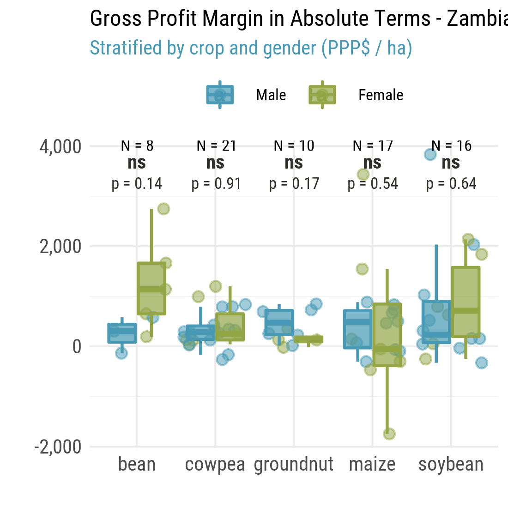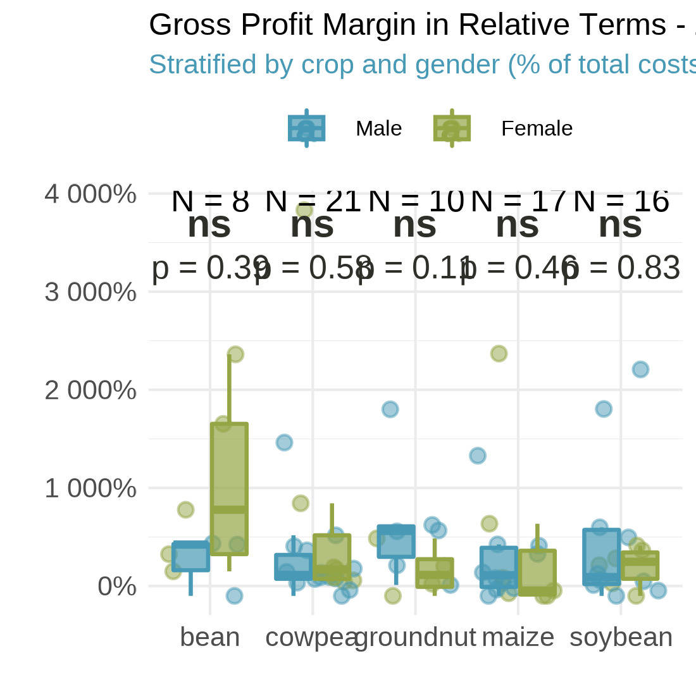
ggBoxTest(hh[!hhid %in% outlier],
aes(crop, margin_ha_ppp, color=years, fill=years),
grp.c=aes(group=crop), grp.s=aes(group=years)) +
scale_y_continuous(labels=comma) +
labs(x="", y="", fill="", color="",
title="Gross Profit Margin in Absolute Terms - Zambia",
subtitle="Stratified by crop and years in seed club (PPP$ / ha)") +
theme_def(legend.position="top")
ggBoxTest(hh[!hhid %in% outlier],
aes(crop, margin_ha_sh, color=years, fill=years),
grp.c=aes(group=crop), grp.s=aes(group=years)) +
scale_y_continuous(labels=percent) +
labs(x="", y="", fill="", color="",
title="Gross Profit Margin in Relative Terms - Zambia",
subtitle="Stratified by crop and years in seed club (% of total costs)") +
theme_def(legend.position="top")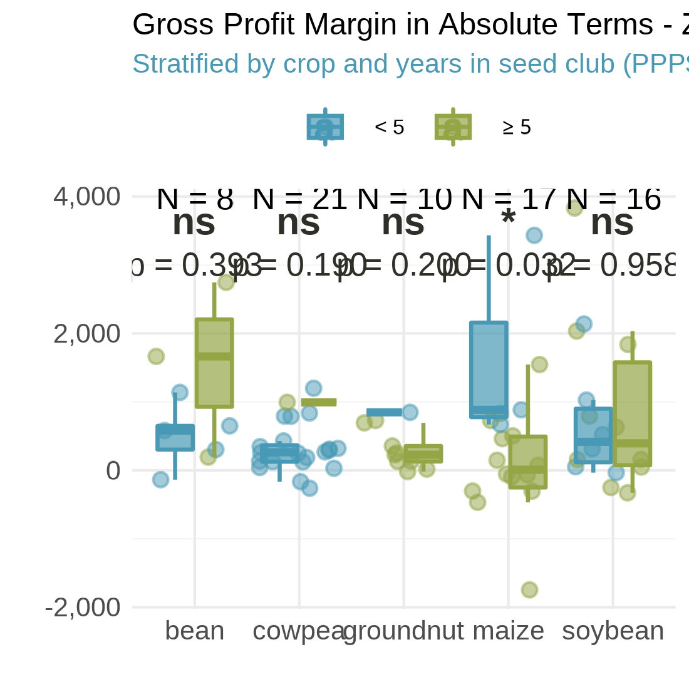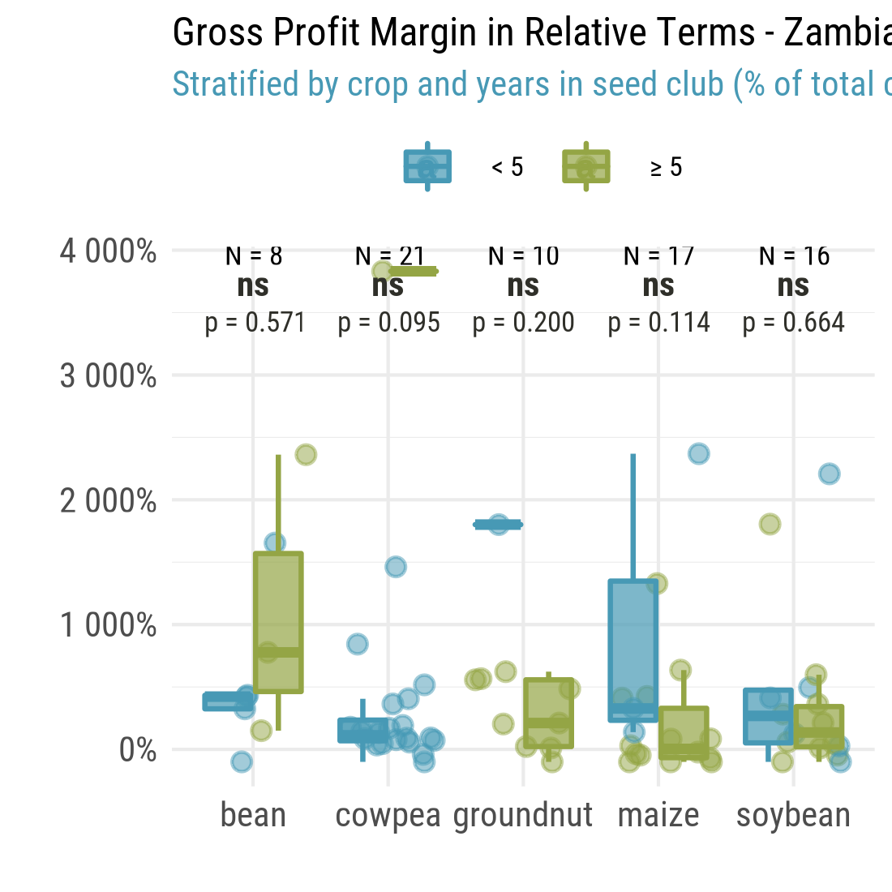
ggBoxTest(hh[!hhid %in% outlier],
aes(crop, margin_ha_ppp, color=group, fill=group),
grp.c=aes(group=crop), grp.s=aes(group=group)) +
scale_x_discrete(labels=label_wrap(5)) +
scale_y_continuous(labels=comma) +
labs(x="", y="", color="", fill="",
title="Gross Profit Margin in Absolute Terms - Zambia",
subtitle="Stratified by crop and seed club (PPP$ / ha)") +
theme_def(legend.position="top")
ggBoxTest(hh[!hhid %in% outlier],
aes(crop, margin_ha_sh, color=group, fill=group),
grp.c=aes(group=crop), grp.s=aes(group=group)) +
scale_x_discrete(labels=label_wrap(5)) +
scale_y_continuous(labels=percent) +
labs(x="", y="", color="", fill="",
title="Gross Profit Margin in Relative Terms - Zambia",
subtitle="Stratified by crop and seed club (% of total costs)") +
theme_def(legend.position="top")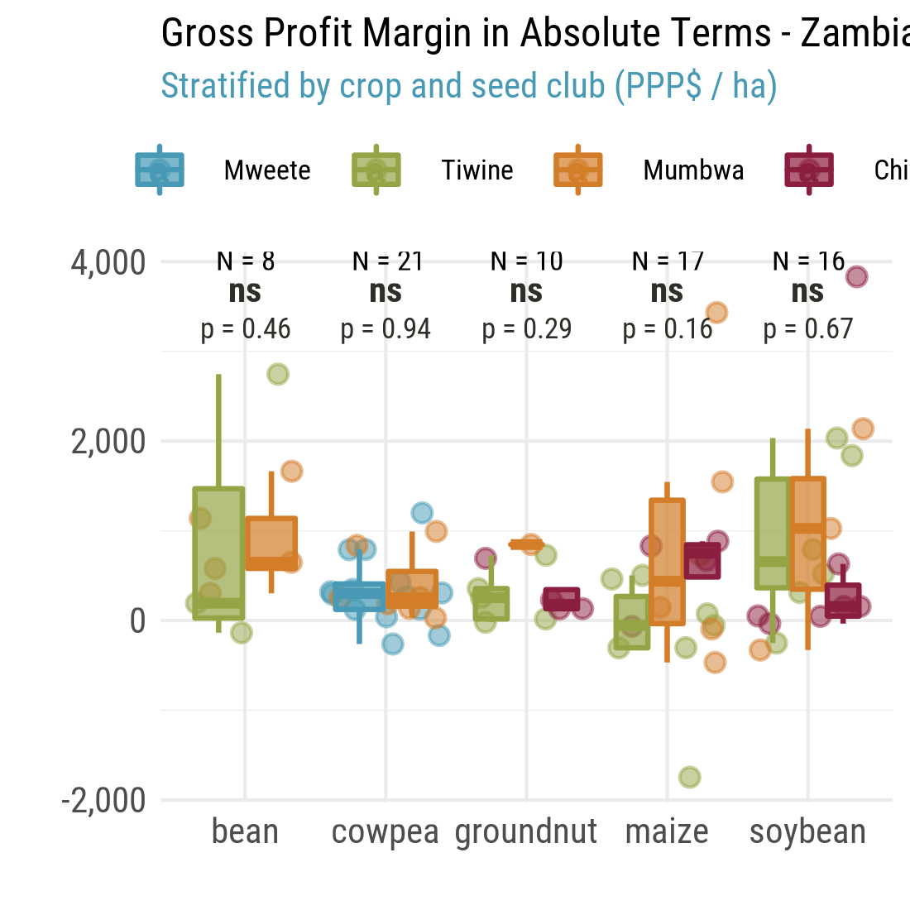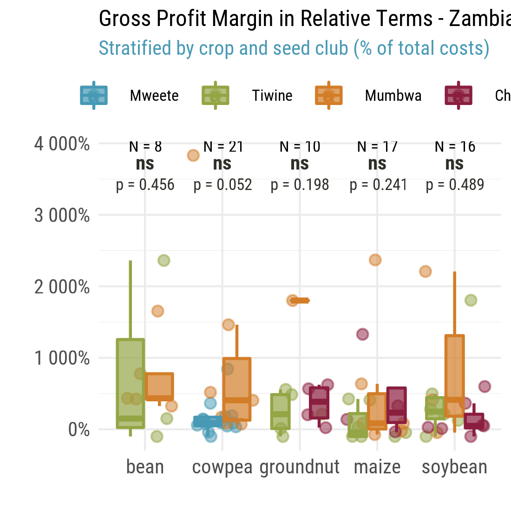
ggplot(hh[!hhid %in% outlier], aes(member_years, margin_ha_ppp)) +
geom_smooth(size=.8) +
geom_point(alpha=.7, shape=20) +
scale_y_continuous(labels=comma) +
labs(x="", y="", color="",
title="Gross Profit Margin in Absolute Terms vs. Years in Seed Club - Zambia",
subtitle="Each point is a respondent (years vs. PPP$)") +
theme_def(legend.position="top")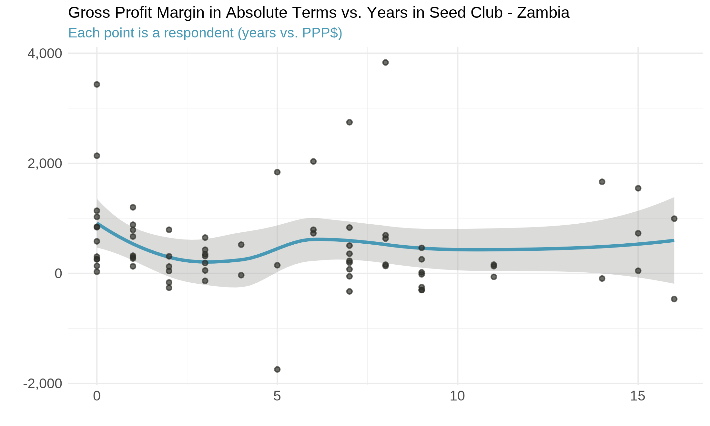
Correlation
Significant pairwise associations.
ggpairs(
hh[, .(`seed club`=group, `years in club`=member_years,
`costs PPP$`=costs_ha_ppp, `seed yield kg/ha`=yield_ha_kg,
`margin PPP$`=margin_ha_ppp, `margin %`=margin_ha_sh)],
upper = list(
continuous="cor",
combo=wrap("summarise_by", color=pal[1:4], size=2)),
lower = list(
continuous=wrap("smooth", shape=NA),
combo=wrap("box_no_facet", fill=pal[1:4], alpha=.8)),
diag = list(
continuous=wrap("densityDiag", fill=NA),
discrete=wrap("barDiag", fill=pal[1:4], alpha=.8)),
title="Correlogram stratified by seed club - Zambia"
) +
theme_def(
strip.text=element_text(hjust=.5),
axis.text.x=element_text(angle=-45),
panel.grid.major=element_blank()
)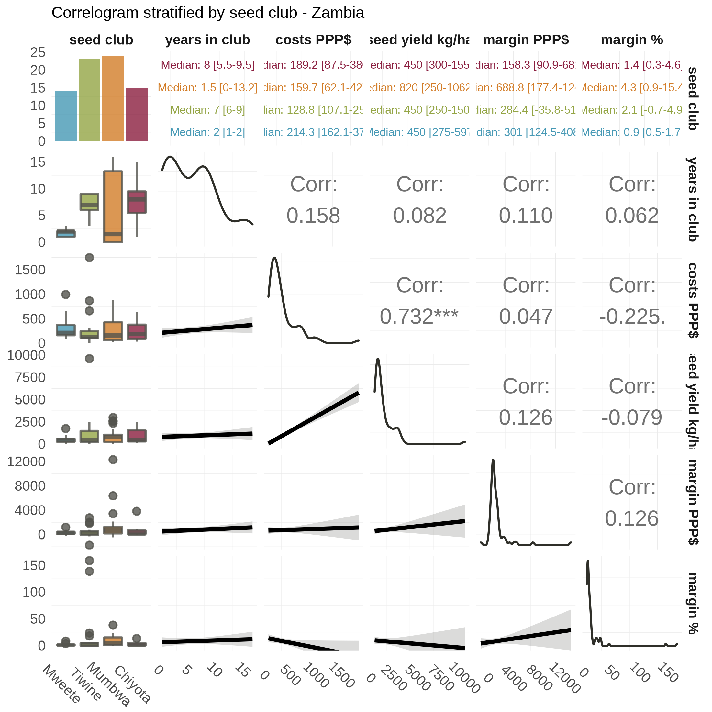
ggpairs(
hh[, .(gender, `years in club`=member_years,
`costs PPP$`=costs_ha_ppp, `seed yield kg/ha`=yield_ha_kg,
`margin PPP$`=margin_ha_ppp, `margin %`=margin_ha_sh)],
upper = list(
continuous="cor",
combo=wrap("summarise_by", color=pal[1:2], size=2)),
lower = list(
continuous=wrap("smooth", shape=NA, color=hh[, pal[gender]]),
combo=wrap("box_no_facet", fill=pal[1:2], alpha=.8)),
diag = list(
continuous=wrap("densityDiag", fill=NA),
discrete=wrap("barDiag", fill=pal[1:2], alpha=.8)),
title="Correlogram stratified by gender - Zambia"
) +
theme_def(
strip.text=element_text(hjust=.5),
panel.grid.major=element_blank()
)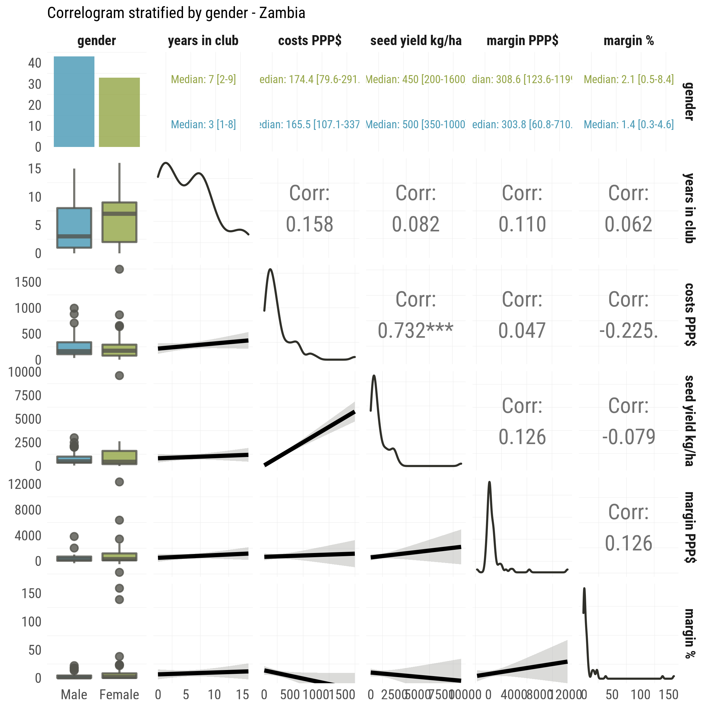
ggpairs(
hh[, .(`years in club`=years,
`costs PPP$`=costs_ha_ppp, `seed yield kg/ha`=yield_ha_kg,
`margin PPP$`=margin_ha_ppp, `margin %`=margin_ha_sh)],
upper = list(
continuous="cor",
combo=wrap("summarise_by", color=pal[1:2], size=2)),
lower = list(
continuous=wrap("smooth", shape=NA, color=hh[, pal[gender]]),
combo=wrap("box_no_facet", fill=pal[1:2], alpha=.8)),
diag = list(
continuous=wrap("densityDiag", fill=NA),
discrete=wrap("barDiag", fill=pal[1:2], alpha=.8)),
title="Correlogram stratified by years in seed club - Zambia"
) +
theme_def(
strip.text=element_text(hjust=.5),
panel.grid.major=element_blank()
)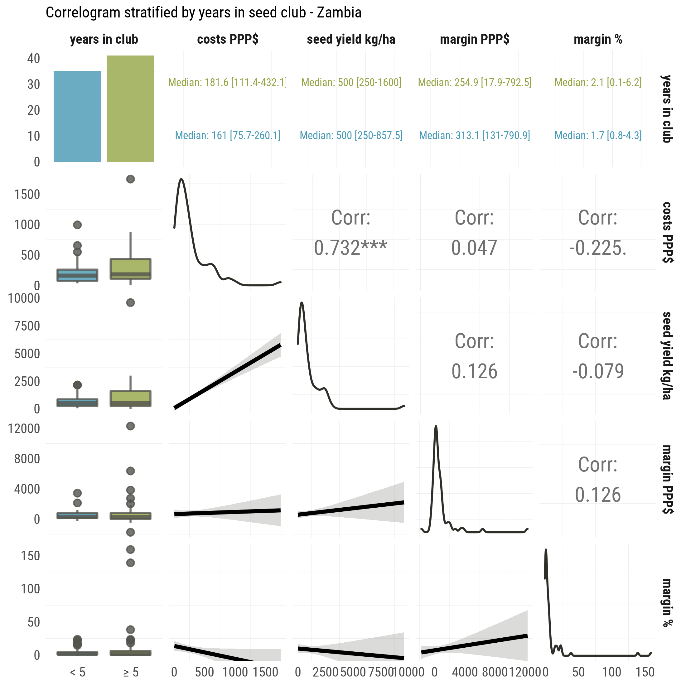
saveRDS(hh, "../tmp/data_zmb.rds")# Combine all country datasets
gtm <- readRDS("../tmp/data_gtm.rds")
nre <- readRDS("../tmp/data_nre.rds")
vnm <- readRDS("../tmp/data_vnm.rds")
zmb <- readRDS("../tmp/data_zmb.rds")
vars <- lbl$code
hh <- rbindlist(list(
gtm[, .SD, .SDcols=names(gtm) %in% vars],
nre[, .SD, .SDcols=names(nre) %in% vars],
vnm[, .SD, .SDcols=names(vnm) %in% vars],
zmb[, .SD, .SDcols=names(zmb) %in% vars]
), fill=T)
setcolorder(hh, lbl[code %in% names(hh), unique(code)])
fwrite(hh, "../data/hh.csv")